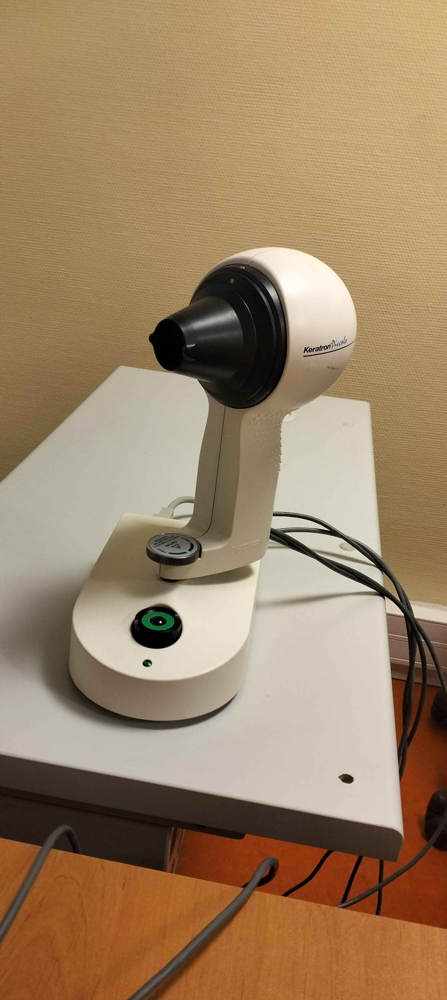

Topographe cornéen

Confort
- Positionnement et Stabilité : Ils intègrent des dispositifs de soutien ajustables pour maintenir la tête du patient dans une position stable, permettant des mesures précises de la topographie cornéenne.
- Ergonomie : Les topographes sont équipés de dispositifs ergonomiques pour minimiser l'inconfort et l'anxiété du patient pendant l'examen.
- Rapidité de l'Examen : Ils sont conçus pour des procédures rapides afin de réduire le temps total d'examen et d'améliorer l'expérience du patient.
Précision
- Cartographie Précise : Ils capturent des images détaillées et précises de la surface de la cornée, permettant une analyse approfondie de sa forme et de ses irrégularités.
- Mesures Objectives : Les données obtenues offrent des mesures quantitatives précises des courbures cornéennes, aidant ainsi à diagnostiquer des conditions comme l'astigmatisme ou la kératocône.
- Suivi des Changements : Ils permettent de suivre l'évolution des conditions cornéennes au fil du temps, facilitant le suivi et l'ajustement du traitement.
Sécurité
- Non-Invasivité : Ils sont non invasifs, n'impliquant aucun contact direct avec la cornée, ce qui réduit les risques d'infection ou de dommages.
- Normes de Sécurité : Conformes aux normes strictes de sécurité médicale, ils sont conçus pour assurer une utilisation sûre dans les environnements cliniques.
- Hygiène : Les dispositifs sont souvent équipés de protections jetables ou stérilisables pour prévenir toute contamination croisée entre les patients.
Efficacité
- Diagnostic Précoce : Ils facilitent la détection précoce des anomalies cornéennes, permettant une intervention rapide et ciblée.
- Intégration avec d'autres Technologies : Certains modèles peuvent être intégrés à d'autres dispositifs pour une évaluation plus complète de la santé oculaire.
- Optimisation du Flux de Travail : En automatisant les processus d'analyse et de rapport, ils permettent aux professionnels de la santé de gérer efficacement leur temps et de fournir des soins personnalisés.